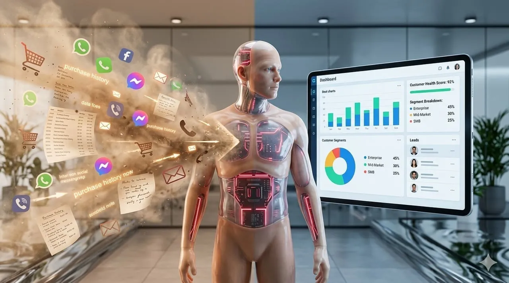
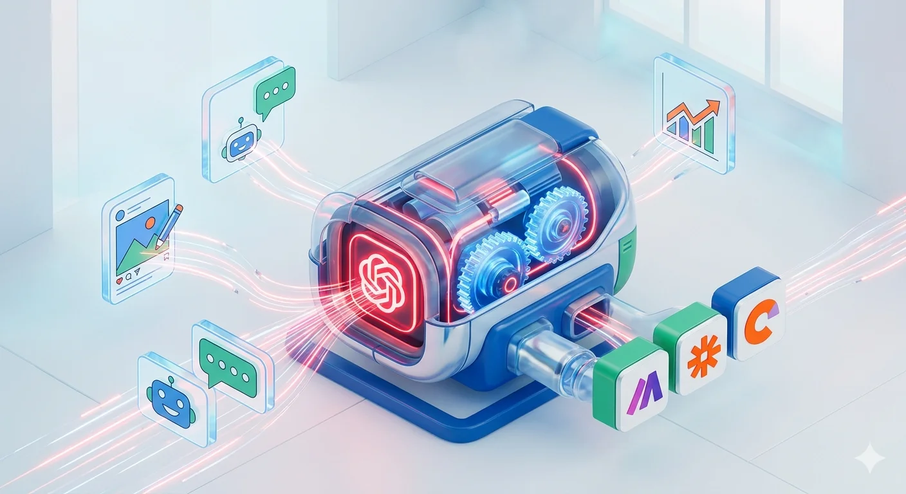
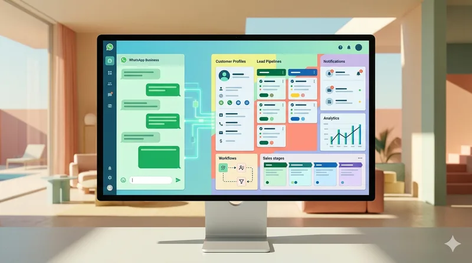

AI כלים
לא עוד ג'ונגל של מודלי AI: איך לנהל את הכל בצורה חכמה
השוק מוצף במודלי AI חדשים כל הזמן. הגיע הזמן ללמוד איך לארגן אותם ולנצל אותם בצורה הכי יעילה לעסק שלך.
השוק מוצף במודלי AI חדשים כל הזמן. הגיע הזמן ללמוד איך לארגן אותם ולנצל אותם בצורה הכי יעילה לעסק שלך.

עם CRM, כל לקוח מקבל את היחס שמגיע לו, והעסק שלך מקבל תמונה ברורה של כל המתרחש. בואו נבין למה זה קריטי להצלחה שלכם.

כמו כל כלי עבודה, גם Monday.com יכול להפוך למלכודת אם לא משתמשים בו נכון. ניסים בנגייב, מומחה אוטומציות, חולק 7 טעויות נפוצות ואיך לתקן אותן.

כולם מדברים על ChatGPT, אבל מעטים יודעים איך לרתום אותו באמת לעסק. בואו נראה איך אוטומציה פשוטה יכולה להפוך את ה-AI הזה לכלי פרודוקטיבי שעובד בשבילכם, ומייצר ערך אמיתי.

כולם מדברים על AI, אבל מעט מאוד עסקים באמת יודעים לרתום אותו במלואו. המאמר הזה יסביר למה מתן גישה לכלי AI זה לא מספיק, ואיך להפוך את העובדים שלכם למומחים שיודעים להפיק ממנו ערך אמיתי.

בחירת מערכת CRM היא אחת ההחלטות החשובות ביותר לעסק שרוצה לנהל קשרי לקוחות ביעילות. בואו נבחן את היתרונות וההבדלים בין Pipedrive ל-HubSpot כדי להבין איזו פלטפורמה תשרת אתכם בצורה הטובה ביותר.

כלי בינה מלאכותית הם כוח אדיר לעסקים, אבל כדי להפיק מהם את המיטב, צריך לדעת איך לדבר איתם. הכירו את הפרומפט אנג'ינירינג – המיומנות שתשנה את הדרך שבה אתם עובדים עם AI.
זמן תגובה מהיר לפניות לקוחות הוא קריטי להצלחת העסק המודרני. למדו איך אוטומציה יכולה להבטיח מענה מיידי, גם מחוץ לשעות העבודה, ולשפר משמעותית את סיכויי סגירת העסקאות.
האם השקעה בפלטפורמת אוטומציה כמו Make.com באמת משתלמת לעסק קטן או בינוני? מעבר למחיר המנוי, אנחנו רוצים להבין מה הערך האמיתי שאוטומציה כזו מביאה לשולחן ולתכלס העסקי.
בעלי עסקים קטנים ובינוניים מתמודדים עם משימות חוזרות שגוזלות זמן יקר. אוטומציה של תהליכים היא המפתח לשחרור זמן, הפחתת טעויות ומיקוד במשימות הליבה של העסק.
אספתם ערימות של כרטיסי ביקור? במקום שהם יצברו אבק, אפשר להפוך אותם בקלות ללידים חמים. גלו איך אוטומציה חכמה משנה את כללי המשחק בניהול אנשי קשר.
האם העסק שלך מרגיש כמו סלט? גלו איך ניתוח תהליכים פשוט יכול לזהות איפה אתם מבזבזים זמן, ואיך אוטומציה עם Make תעזור לכם לייעל את העבודה.

אוטומציה עסקית חוסכת לעסקים קטנים ובינוניים עשרות שעות בשבוע. מה זה בדיוק, איך זה עובד, ואיך יודעים אם העסק שלך מוכן? המדריך המלא.
רוצים שכל הודעת WhatsApp תיכנס אוטומטית ל-CRM שלכם? מדריך מעשי לחיבור WhatsApp Business ל-Monday, HubSpot, Fireberry ועוד — ללא קוד.
Make.com או Zapier? ההבדלים האמיתיים במחיר, יכולות ומורכבות — וההמלצה שלנו לעסקים קטנים ובינוניים בישראל שמחפשים כלי אוטומציה.

עסק ישראלי ממוצע מתנהל ברובו ב-WhatsApp, אבל איך משלבים את כל השיחות החשובות עם ניהול הלקוחות ב-CRM? נדבר על איך חיבור WhatsApp ל-CRM יכול לשדרג לכם את ההתנהלות מול לקוחות ולחסוך המון זמן.
עסקים רבים מתמודדים עם אתגרי מעקב אחרי לידים פוטנציאליים, מה שגורם להם לאבד הזדמנויות יקרות. במאמר הזה נסביר איך לשפר מעקב לידים בעזרת אוטומציה חכמה, ולסגור יותר עסקאות.

אם אתם משתמשים בסוכני AI בעסק, אתם בטח יודעים כמה מהר הם יכולים להפוך לבלגן. במאמר הזה נסביר איך סוכני AI עובדים יחד בצורה מסודרת, ואיך אפשר לייצר מהם כוח עבודה דיגיטלי יעיל באמת.

בעולם האוטומציה המתפתח, עסקים רבים מתלבטים בין גישות שונות וטכנולוגיות חדשות. במאמר הזה נצלול לעומק ונבחן את ההבדל בין RPA ל-AI Agent, כדי שתבינו איזו גישה מתאימה יותר לצרכים הייחודיים של העסק שלכם.

היום נדבר על איך חיבור Monday ל-WhatsApp יכול לחסוך לכם זמן יקר ולשפר את שירות הלקוחות שלכם. נבין למה אוטומציה כזו קריטית ואיך לבנות אותה בפועל.

חיבור וואטסאפ ל-CRM הוא צעד קריטי לעסקים שרוצים לשפר את תקשורת הלקוחות שלהם ולייעל תהליכים. המדריך הזה יראה לכם איך לשלב את הפלטפורמות ומהם היתרונות שתקבלו מעבודה כזאת.

ה-AI נמצא בכל מקום, אבל איך באמת מחברים אותו לעסק? המדריך הזה מראה איך לבצע חיבור AI למערכות עסקיות קיימות כדי לייעל תהליכים ולחסוך זמן.

תוהים איך לחבר את ChatGPT לעסק שלכם בצורה שתייצר ערך אמיתי? המדריך הזה מראה איך לשלב את יכולות ה-AI במערכות הליבה של העסק, כמו ה-CRM וה-WhatsApp, כדי לייעל תהליכים ולשפר את חווית הלקוח.

אבטחת WhatsApp לעסקים היא כבר לא רק המלצה, אלא הכרח קריטי לשמירה על המידע של הלקוחות והמוניטין של העסק. נבין יחד איך מאבטחים WhatsApp לעסקים ומהם הצעדים שכל בעל עסק חייב לנקוט כדי להגן על עצמו.

אוטומציה עם ChatGPT מאפשרת לעסקים קטנים ובינוניים לייעל תהליכים ולשחרר זמן יקר. גלו איך לשלב את ה-AI בעסק שלכם כדי לשפר שירות לקוחות, לייצר תוכן ולנתח נתונים בקלות.
מחיבור טפסי לקוחות ל-CRM ועד שליחת חשבוניות אוטומטית — אלה החמשה שהכי חוסכים זמן, ויש לנו תבנית מוכנה לכל אחד.
השוואה מעשית של שני המודלים הגדולים: יכולות, עלויות, ואיפה כל אחד מנצח בתסריטים אמיתיים.
צעד אחר צעד: חיבור WhatsApp Business API עם Make, בניית תגובות חכמות, ושמירה על טון אישי גם כשזה אוטומטי.
צפו בי בונה תהליך קבלת לקוח חדש מלא: מייל ברוכים הבאים, יצירת כרטיס CRM, ותזמון פגישה — הכל אוטומטי.
אחרי עשרות הטמעות, אלה הטעויות שחוזרות על עצמן. מ-boards מבולגנים ועד אוטומציות שמתנגשות זו בזו.
המדריך המעשי לכתיבת הוראות לבינה מלאכותית שמשפרות תוצאות ב-80% — עם דוגמאות מהחיים האמיתיים.